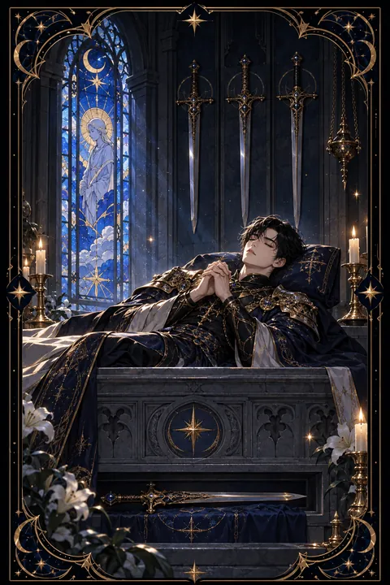

검 4 카드 — 싸움을 멈추고 쉬어 가는 회복
검 4 카드 한눈에 보기
검 4 카드 상징 읽기

동네보살의 카드 그림은 전통 라이더–웨이트 덱의 뜻을 새 그림으로 옮긴 것입니다. 아래 상징 설명은 전통 덱의 그림을 기준으로 합니다.
고요한 성당 안에서 갑옷을 입은 기사가 돌관 위에 누워 두 손을 가슴 앞에 모으고 있습니다. 이는 끝이 아니라 싸움을 잠시 멈추고 깊은 휴식에 든 모습을 뜻합니다.
벽에 걸린 세 자루의 검은 지나온 갈등과 고민을 내려놓았음을 상징합니다. 누운 자리 아래 가로로 놓인 한 자루의 검은 언제든 다시 일어설 수 있도록 곁에 남겨 둔 힘이며 흐트러진 생각을 하나로 모으는 집중을 나타냅니다.
왼쪽 위의 색유리 창에는 누군가 무릎 꿇은 이에게 축복을 건네는 장면이 그려져 있습니다. 이는 쉼 속에서 얻는 위로와 회복을 뜻합니다. 성당이라는 공간은 바깥의 소란과 떨어진 안식처로서 내면을 돌아보는 성찰의 시간을 보여 줍니다. 모든 요소가 멈춤이 곧 다음 걸음을 위한 준비라는 메시지를 전합니다.
검 4 카드 정방향 뜻
정방향 검 4는 휴식과 회복이 필요한 때를 알립니다. 오랫동안 갈등이나 스트레스 속에서 버텨 왔다면 이제 잠시 멈추고 몸과 마음을 돌볼 차례입니다.
이 카드가 말하는 쉼은 게으름이 아닙니다. 싸움터에서 물러나 숨을 고르는 동안 지친 몸은 기운을 되찾고 머리는 상황을 차분하게 정리할 여유를 얻습니다. 혼자만의 조용한 시간, 명상, 산책, 충분한 수면이 모두 이 카드가 권하는 방법입니다.
중요한 결정이나 새로운 도전은 기운이 회복된 뒤로 미루는 편이 좋습니다. 지금 서두르면 작은 실수가 크게 번질 수 있습니다. 일정표에 쉬는 시간을 약속처럼 적어 두고 그 시간만큼은 연락과 일에서 떨어져 보세요. 충분히 쉬고 난 뒤에 내리는 판단은 훨씬 선명하고 단단합니다. 멈춤은 뒤처짐이 아니라 다음 걸음을 위한 준비입니다.
검 4 카드 역방향 뜻
역방향 검 4는 두 가지 방향으로 읽습니다. 첫째는 쉬어야 할 때 쉬지 못하는 상태입니다. 할 일에 쫓겨 휴식을 계속 미루다 보면 몸과 마음이 한계에 다다르고 잠을 자도 피로가 풀리지 않는 날이 이어질 수 있습니다.
둘째는 긴 휴식이나 침체기를 끝내고 다시 움직일 때가 왔다는 신호입니다. 너무 오래 웅크리고 있었다면 이제 조금씩 활동을 늘려 가야 합니다.
어느 쪽인지 판단하려면 자신의 상태를 솔직하게 살펴보는 것이 먼저입니다. 피로가 쌓였다면 일정 하나를 과감히 비우고 기본적인 수면과 식사부터 챙기세요. 반대로 기운이 돌아왔는데도 망설이고 있다면 부담이 적은 일부터 시작해 감각을 되찾으면 됩니다. 쉼과 움직임의 균형을 되찾는 것이 이 카드의 핵심입니다. 스스로에게 쉬어도 된다고 허락하는 일도, 다시 움직여도 된다고 허락하는 일도 모두 필요합니다.
연애에서 검 4 카드
솔로라면 새로운 인연을 찾기보다 자신을 돌보는 데 집중하기 좋은 시기입니다. 지난 관계에서 쌓인 피로가 남아 있다면 충분히 쉬면서 마음을 비워 두세요. 여유가 생긴 뒤 만나는 사람이 훨씬 편안하게 다가옵니다.
둘이 만나는 중이라면 관계에 잠깐의 숨 고르기가 필요할 수 있습니다. 서로 바쁘고 지쳐 있다면 무리하게 데이트 일정을 잡기보다 함께 조용히 쉬는 시간을 가져 보세요. 상대가 잠시 연락이 뜸하더라도 마음이 식었다고 단정하지 말고 쉬는 시간을 존중해 주는 것이 좋습니다. 갈등이 있었다면 감정이 가라앉을 때까지 결론을 미루는 것도 현명한 선택입니다. 차분해진 마음으로 나누는 대화가 관계를 더 깊게 만듭니다. 둘이 함께 산책하거나 조용한 곳에서 차 한잔을 나누는 것만으로도 서로의 마음이 한결 편안해집니다. 쉼을 함께 나누는 사이는 바쁜 시기도 무리 없이 건넙니다.
재회·속마음 질문에서 검 4 카드
재회 질문에서 검 4가 나오면 지금은 서두르지 말고 시간을 두라는 뜻입니다. 두 사람 모두 지친 상태일 가능성이 크고 감정이 정리되지 않은 채 다시 만나면 같은 갈등이 반복되기 쉽습니다. 연락을 잠시 멈추고 각자 마음을 추스르는 기간이 필요합니다. 충분한 시간이 흐른 뒤에도 마음이 남아 있다면 그때 가볍게 안부를 건네 보세요. 역방향이라면 멈춰 있던 관계가 다시 움직일 조짐으로 읽을 수 있습니다. 쉬는 동안 헤어진 이유를 조용히 되짚어 보면 다시 만났을 때 무엇을 바꿔야 할지 선명해집니다. 서로 지친 마음을 먼저 회복해야 대화도 부드럽게 이어집니다. 조급하게 답을 얻으려 하기보다 제 생활의 리듬을 먼저 되찾는 편이 현명합니다.
일·금전에서 검 4 카드
일과 직장에서는 재충전의 시간이 필요하다는 카드입니다. 계속되는 야근이나 긴장으로 효율이 떨어지고 있다면 휴가나 짧은 휴식을 계획해 보세요. 쉬는 동안 업무를 멀리서 바라보면 놓치고 있던 문제와 해법이 보이기도 합니다. 새로운 프로젝트나 이직 같은 큰 결정은 기운을 회복한 뒤로 미루는 편이 안전합니다.
씀씀이와 벌이 쪽을 보면 새로운 일을 벌이기보다 현재 상태를 유지하며 정리하는 시기입니다. 급하게 움직이기보다 지출을 점검하고 여유 자금을 조금씩 모으는 것이 안정에 도움이 됩니다. 몸이 회복되면 일의 속도와 질도 함께 올라가니 쉼을 낭비로 여기지 마세요. 짧은 휴식이라도 규칙적으로 챙기면 긴 휴가 못지않은 힘이 됩니다.
검 4 카드는 예일까 아니오일까
지금은 서두르지 말고 쉬면서 때를 기다리라는 카드여서 조건부로 봅니다. 충분히 준비를 마친 뒤라면 예에 가까워지고 지친 상태로 밀어붙인다면 아니오에 가깝습니다.
자주 묻는 질문
검 4 카드 역방향은 나쁜 뜻인가요?
역방향 검 4는 두 가지 방향으로 읽습니다. 첫째는 쉬어야 할 때 쉬지 못하는 상태입니다. 할 일에 쫓겨 휴식을 계속 미루다 보면 몸과 마음이 한계에 다다르고 잠을 자도 피로가 풀리지 않는 날이 이어질 수 있습니다.
검 4 카드가 연애 질문에 나오면요?
솔로라면 새로운 인연을 찾기보다 자신을 돌보는 데 집중하기 좋은 시기입니다. 지난 관계에서 쌓인 피로가 남아 있다면 충분히 쉬면서 마음을 비워 두세요. 여유가 생긴 뒤 만나는 사람이 훨씬 편안하게 다가옵니다.
타로 카드는 어떻게 뽑나요?
타로 카드 페이지에서 78장을 섞으면 그중 22장이 펼쳐집니다. 마음이 가는 세 장을 고르면 과거·현재·미래 자리에 놓이고, 한 장씩 뒤집어 자리와 방향에 맞는 풀이를 읽습니다. 정방향과 역방향은 섞는 순간 정해집니다.